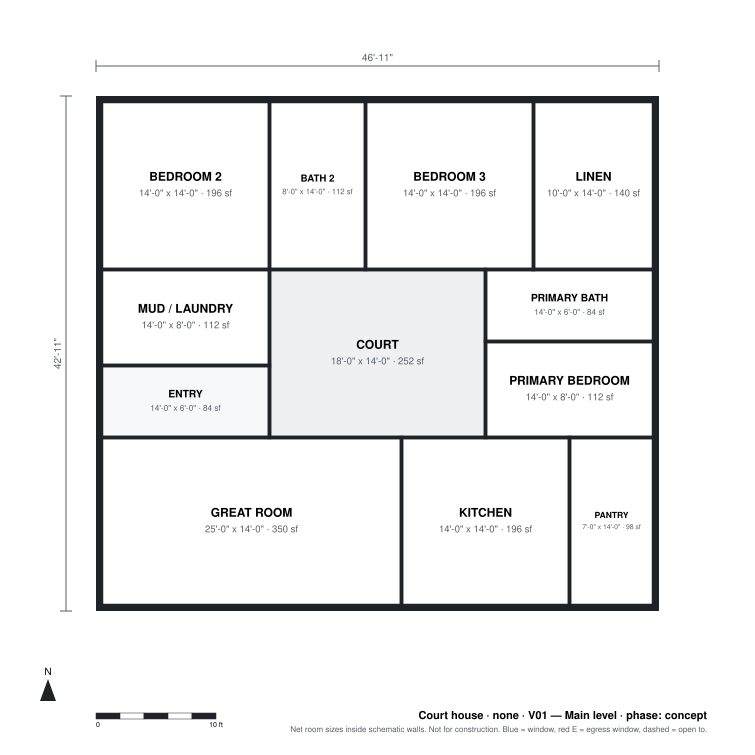
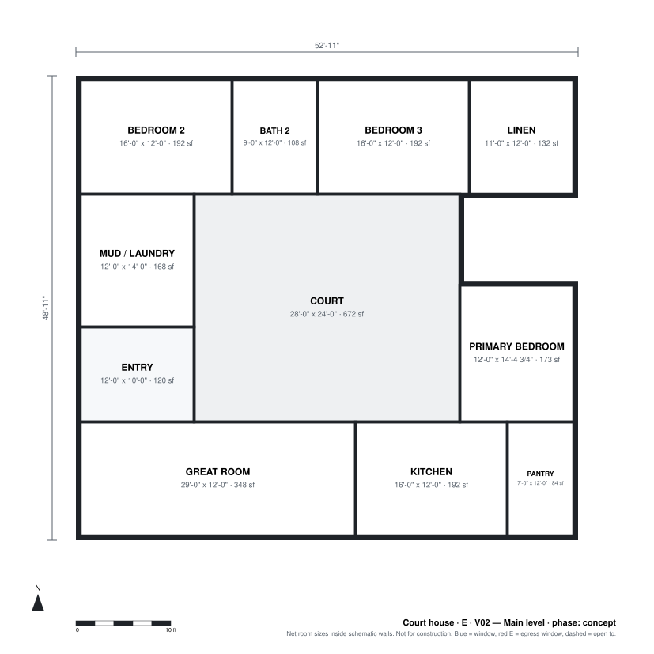
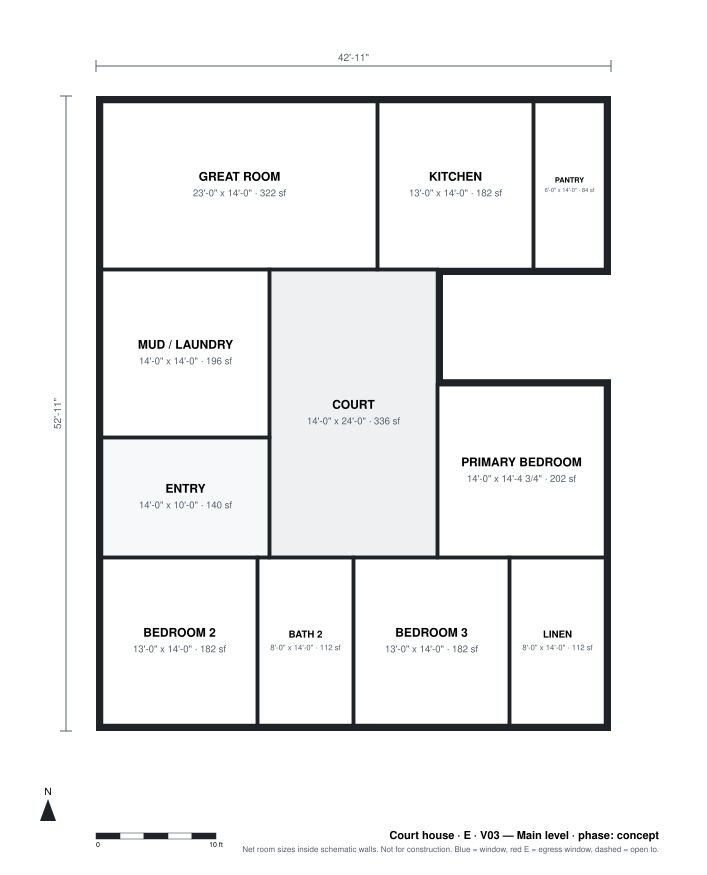
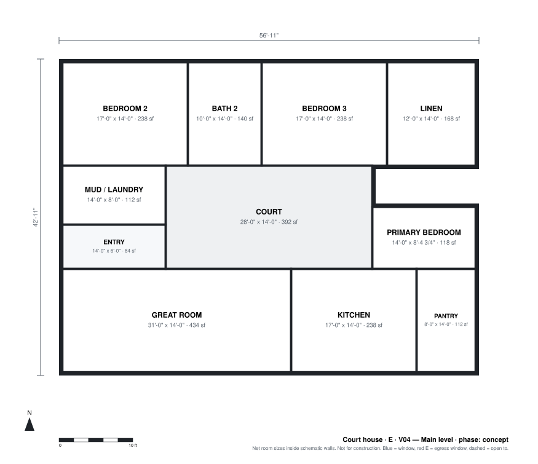
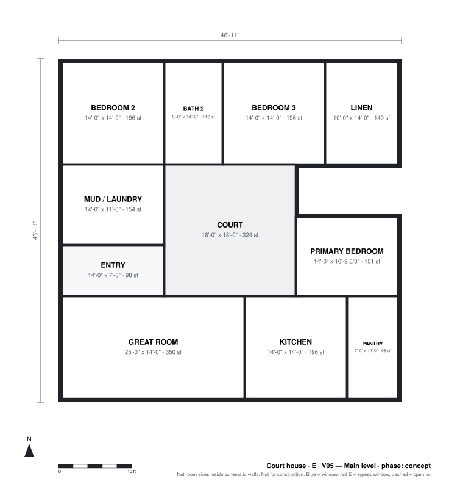
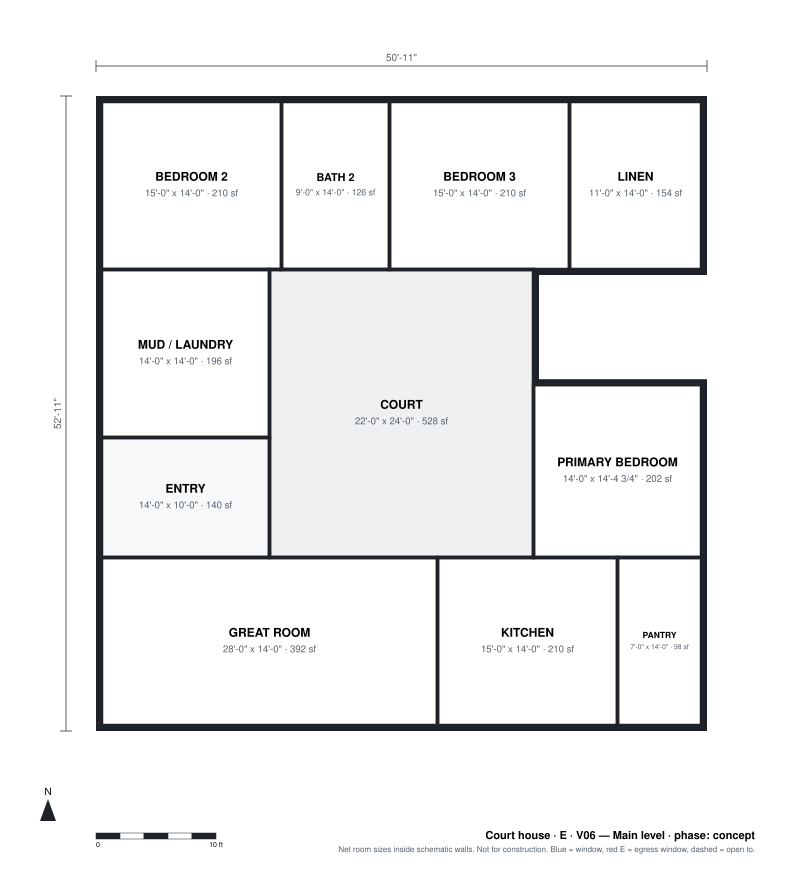

court_w_ft=18, court_d_ft=14, ring_ft=14, living_side=S, open_side=none
aspect 1.10 · compactness 0.87 · shape_factor 5.86 · south_glazing 0.00 · circulation 0.05 · outdoor 0.13 · levels 1.00
warnings: none

court_w_ft=28, court_d_ft=24, ring_ft=12, living_side=S, open_side=E
aspect 1.08 · compactness 0.68 · shape_factor 7.47 · south_glazing 0.00 · circulation 0.07 · outdoor 0.28 · levels 1.00
warnings: none

court_w_ft=14, court_d_ft=24, ring_ft=14, living_side=N, open_side=E
aspect 1.24 · compactness 0.78 · shape_factor 6.59 · south_glazing 0.00 · circulation 0.08 · outdoor 0.16 · levels 1.00
warnings: none

court_w_ft=28, court_d_ft=14, ring_ft=14, living_side=S, open_side=E
aspect 1.33 · compactness 0.80 · shape_factor 6.84 · south_glazing 0.00 · circulation 0.04 · outdoor 0.17 · levels 1.00
warnings: none

court_w_ft=18, court_d_ft=18, ring_ft=14, living_side=S, open_side=E
aspect 1.00 · compactness 0.80 · shape_factor 6.56 · south_glazing 0.00 · circulation 0.06 · outdoor 0.16 · levels 1.00
warnings: none

court_w_ft=22, court_d_ft=24, ring_ft=14, living_side=S, open_side=E
aspect 1.04 · compactness 0.75 · shape_factor 6.92 · south_glazing 0.00 · circulation 0.07 · outdoor 0.21 · levels 1.00
warnings: none